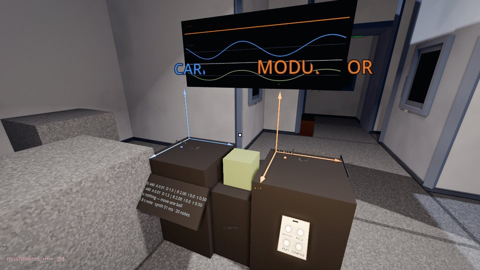
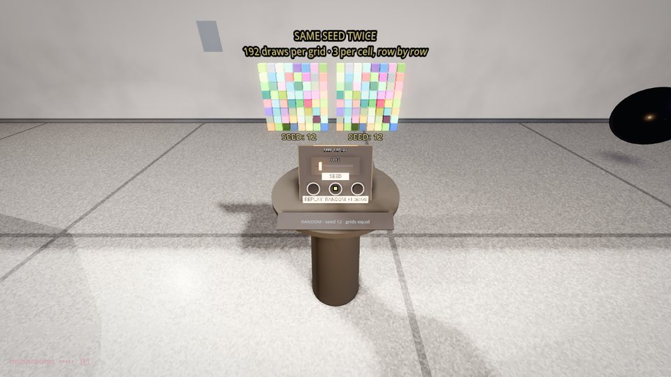
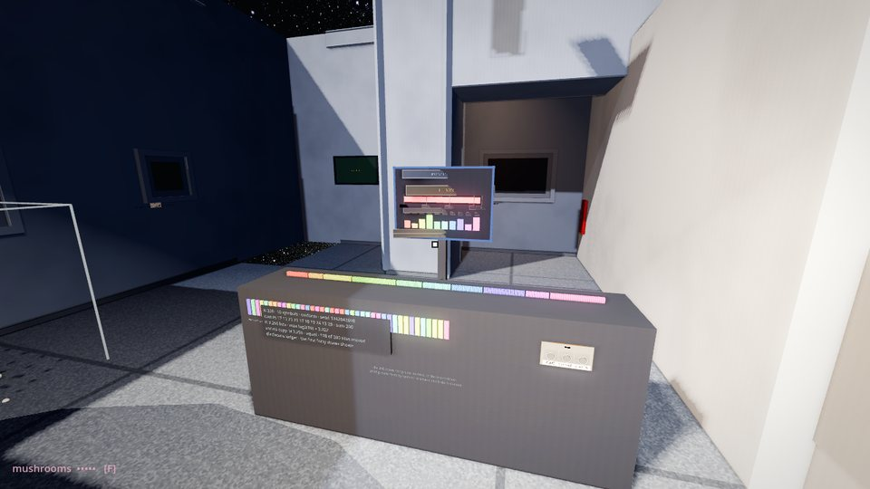

Keep the progress.
Make three encounters clearer.
12 September 2026 · Astra reviewed images from all twelve rooms, the source changes and saved runs. The independent single-synth shutdown check exits cleanly.
Nine rooms provide an improved visual baseline. Effect Sound, Definition and Entropy need the bounded follow-ups below. This does not certify headset reach, listening, or every earlier change included in the commits.
The earlier Pendulum obstruction was an invalid camera position inside the table. Its revised view is useful, but it changes camera position and field of view as well as the room.
WaveFunctions_Effect_Sound
Keep both names and the readout visible

The lowered scope cuts through CARRIER and MODULATOR in the desktop-front capture. The dedicated readout capture is almost entirely a grey block, contradicting the handback claim that it reads whole. That may be another invalid camera position; establish a reachable standing position before moving museum geometry.
Next for Claude: Move or resize the two labels independently of the scope. Find one valid operating view with both balls, the full readout and the audition controls visible; capture that view and a reachable close view. Preserve clear aisles and the improved hand space.
Random_Definition
Finish contrast, not just size

The enlarged panel and action line are useful, but the cream controller remains washed out. Its button labels and seed are still harder to read than the grid title in the supplied desktop-close image.
Next for Claude: Use local material and lettering contrast so REPLAY, RANDOM, +1 DRAW and the seed are readable from the operating spot. Keep both grids and the action line in view.
Random_Entropy
Let all forty enlarged draws be seen

The magnified excerpt is the right addition. Its left portion sits behind the cased readout, leaving many tiles only partly visible. The explanatory caption is very small at the operating distance.
Next for Claude: Separate the enlarged row, its caption and the existing readout vertically or laterally. Show all forty whole tiles and a readable statement that this is the original-order excerpt. Preserve exact sample identity through SORT and CONTRAST.
Return these three rooms with valid standing views, targeted checks and any remaining limitations. Preserve the successful changes and the book voice.
Read the full review, evidence limits and reusable lessons